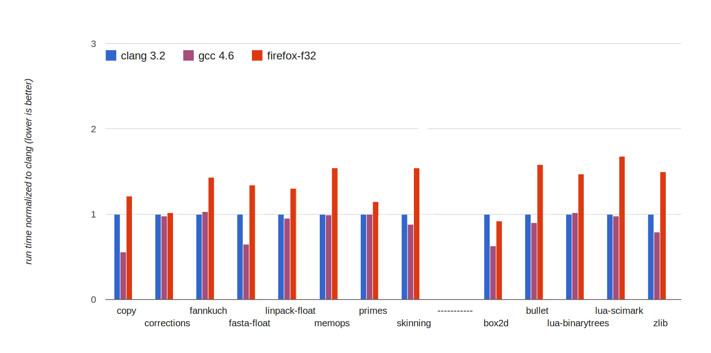

New Type-Based
Optimizations in the
SpiderMonkey VM
sotu.js 2014
Alon Zakai/@kripken
JavaScript VM Opts
Many kinds: Object layout (hidden classes, etc.), garbage collection (generational GC, etc.), etc. etc.
Here I'll focus not on those, but on type-based optimizations
Type-based opts
Many benchmarks (most of kraken, parts of octane, etc.) test pure computation
Optimizations include type profiling, type inference, type specialization
Prominent in modern JS VMs (optimizing JITs like crankshaft, ionmonkey, etc.)
This talk
- float32
- asm.js
- backtracking register allocator
All of these only make sense given type information
1. float32
float32
JavaScript numbers are 64-bit doubles
But VMs has 32-bit ints as well!
Possible due to mathematical facts about integer and double math
Say we are adding two values known to be 32-bit ints:
xint + yint == double(xint) +double double(yint)
== xint +int yint
assuming no overflow happened
Thankfully those checks are cheap, but can do even better:
(xint + yint)|0 == xint +int yint
These are true because:
xint +int yint == int( double(xint) +double double(yint) )
I.e., all numbers are doubles, but the ones that happen to be integers can be added as integers, since the math is the same either way
float32
We can do the same for 32-bit floats!
xf32 +f32 yf32 == f32( f64(xf32) +f64 f64(yf32) )
Also true for -,*,/,sqrt, etc. (but not everything, e.g. not sin)
Where do float32 values come from?
Typed arrays
var f32 = new Float32Array(1000);
for(var i = 0; i < 1000; ++i) {
f32[i] = f32[i] + 1;
}
Stuff like this is common in WebGL code
Fragile, though - needs to be case back to float32 immediately
var f32 = new Float32Array(1000);
for(var i = 0; i < 1000; ++i) {
f32[i] = 2*f32[i] + 1;
}
Not optimizable :(
Math.fround: explicitly cast a number to 32-bit float precision
var f32 = new Float32Array(1000);
for(var i = 0; i < 1000; ++i) {
f32[i] = Math.fround(2*f32[i]) + 1;
}
Optimizable :)
fround support
In ES6. Already in Firefox, Safari, Chrome (behind a flag)
Easy to polyfill
if (!Math.fround) {
Math.fround = (function() {
var temp = new Float32Array(1);
return function fround(x) {
temp[0] = +x;
return temp[0];
}
})();
}
or
var fround = Math.fround || function(x) { return x };
float32 microbenchmarks
% speedup with float optimizations
| Device | Matrix Inversions | Matrix Graphics | Exponential | FFT |
| Desktop (x86) | 33% | 60% | 30% | 16% |
| Nexus 10 | 38% | 38% | 24% | 33% |
float32 - compiled benchmarks

why is float32 faster?
Less precise, often less CPU cycles
Half the size, fewer cache misses
WebGL code often stores float32 for space, doing computation in float32 avoids conversions
Not yet, but possible: more registers/SIMD lanes
2. asm.js
Modern JS VMs have powerful optimizing JITs that operate on typed code
What if we let people target those backends as directly as possible, stepping over all the heuristics that normally stand in the way?
asm.js is one way to do that
asm.js is a subset of JavaScript (not a new language, no new semantics, all 100% backwards compatible)
Written in a format that is extremely easy to optimize
E.g., the |0 pattern mentioned before
function twice(x) {
x = x | 0;
return x + x | 0;
}
No need to profile types, can immediately optimize ahead of time
asm.js example
function asmCode(global, env, buffer) {
'use asm';
var HEAP = new global.Uint8Array(buffer);
function fib_like(x) {
x = x|0;
if ((x >>> 0) < 2) return HEAP[x]|0;
return (fib_like(x-2|0)|0) + (fib_like(x-1|0)|0) | 0;
}
return fib_like;
}asm.js workflow
Low-level and mostly inconvenient to write by hand - primarily intended as a compiler target
Emscripten is an open source LLVM-based compiler that generates asm.js from C/C++
asm.js Industry Adoption
Top-tier game engines support HTML5 as a compilation target, using Emscripten to emit asm.js
Unity - as a replacement for their popular web plugin
Unreal Engine - as a new target platform
etc.
asm.js performance

Around 1.5x slower than native (67% of native speed)
Optimizations
AOT - full optimizing JIT always run, using full type info
AOT done in parallel, results cached
No need for bailouts, we know many corner cases are impossible, etc.
On 64-bit, can do zero-cost bounds checks using a signal handler
Implementation
OdinMonkey is the optimization module for asm.js in SpiderMonkey
Fairly small amount of code
Mostly just type checks and sends the results into the existing IonMonkey optimizing JIT
3. Backtracking Register Allocator
Backtracking Register Allocator
LLVM